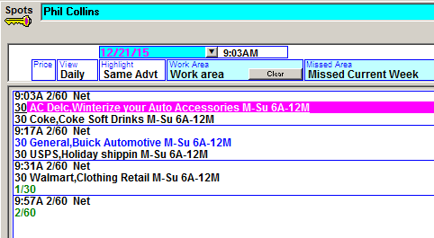
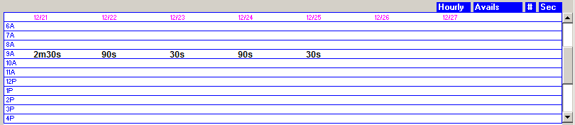

Daily View
While the weekly view shows all the spots for the entire selected week, the daily view shows the spots for a single, user selected day.
The daily view can be used by setting the “View” option to “Daily” then pressing tab, and then selecting the date to view from the date dropdown under the vehicle name. (When the system is set to the “Radio Station” setting on the “System Used For” option in the Traffic Site Options General tab, the Spots screen will default to the daily view.)
The daily view shows the spots for a single day at a time as shown below.

Similar to the weekly view, the Work Area and Missed Area are both available on the daily view, with the Work Area appearing in the lower left corner of the screen, and the Missed Area appearing on the right side of the screen.
Spots can be moved from the Work Area and Missed Area to the schedule area, or from the schedule area to the Work Area and Missed Area on the daily view, in the same way that they are moved on the weekly view.
Daily View Work Area
The daily view Work Area has three different views that can be selected by clicking the blue toggle directly above it.
- Avails/Spots: shows avails and the scheduled spots.
- Events – All: shows the programs and running length defined for the vehicle.
- Unsold Only: shows all breaks with unsold avails, hiding any completely filled break.
Daily View Avail/Sellout Information
The area in the lower right corner displays additional avail information for the selected vehicle.

Each day of the week is shown (for the week that the selected day is in), with the total amount of avails in minutes and seconds for each hour (by default). The following options are available by clicking the toggles directly above this view:
- Hourly or Daypart: this option allows you to toggle between seeing the days broken out by hours or by daypart.
- Avails, Inventory, or Sold: this option allows you to toggle between seeing the avails (unsold), inventory (the total inventory available, regardless of what is sold or not sold) and sold.
- Number or Percent: this option allows you to toggle between seeing the avails/inventory/sold expressed as a number or a percentage.
- Seconds or Units: when the number option is selected (directly to the left of this toggle), you can switch between viewing the inventory/avails in seconds or in units.